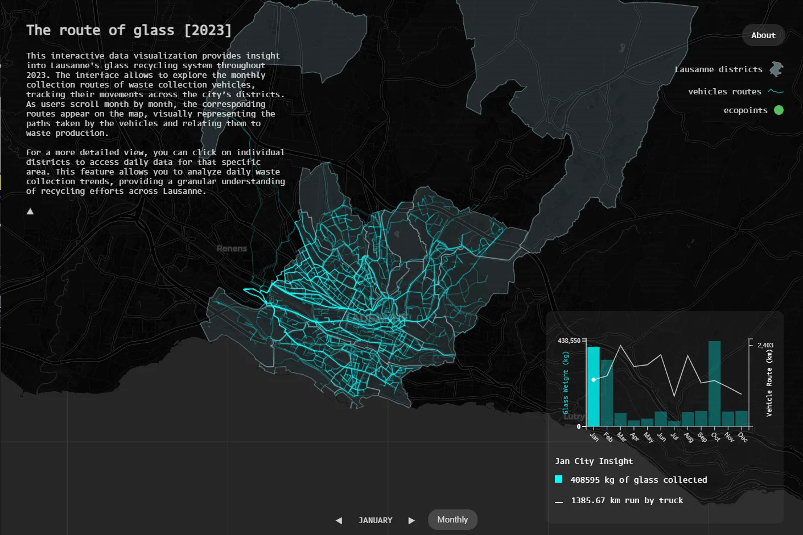
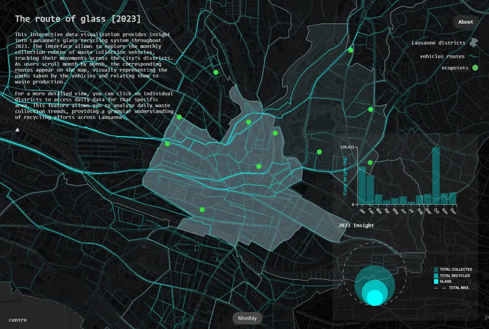
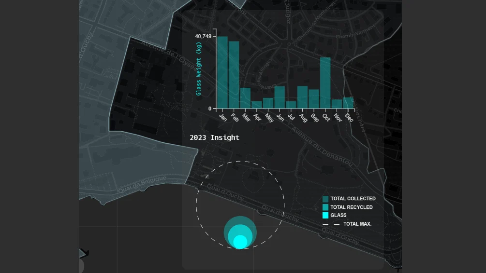
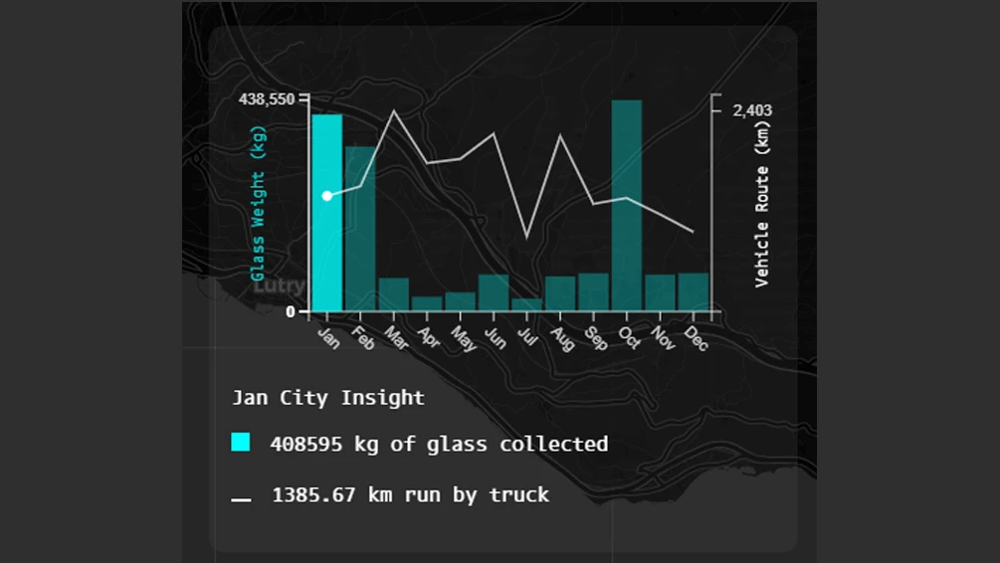

The Route of Glass
This interactive data visualization investigates the patterns and efficiency of glass waste collection in Lausanne throughout 2023. By layering vehicle route data with glass waste volumes and the distribution of recycling points, the project uncovers how infrastructure and geography shape urban recycling behavior.
Challenge
Mapping multi-layered, interconnected networks of urban flows of Lausanne
Class
Data driven design workshop - master of interaction design SUPSI
Modality
1 week - team of 4
Roles
creative coding
Tools
HTML, CSS, Javascript, 3D.JS

OUTCOME
Users can explore monthly glass collection routes across Lausanne, compare waste volumes by district, and examine the density of ecopoints. The interface invites users to uncover correlations between collection efficiency, waste volume, and local infrastructure making complex urban data tangible and explorable.
Close up



Learning
Designing for Explorability
Explored how interface design and interaction can guide users through complex datasets, making data relationships clearer and more engaging.
Finding Meaning in Multilayered Data
Developed strategies for combining demographic, geospatial, and waste data to surface meaningful patterns and actionable insights.
Translating Complex Formats
Learned how to convert and validate spatial data across multiple formats (DXF, JSON, CSV), strengthening data handling and cross-referencing skill